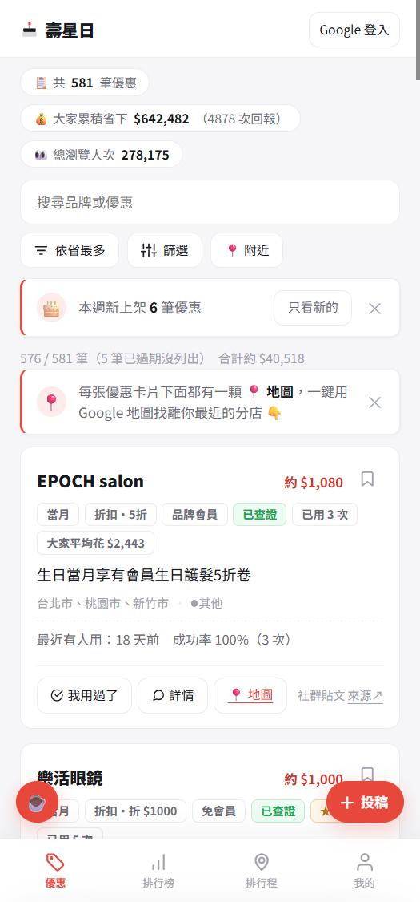
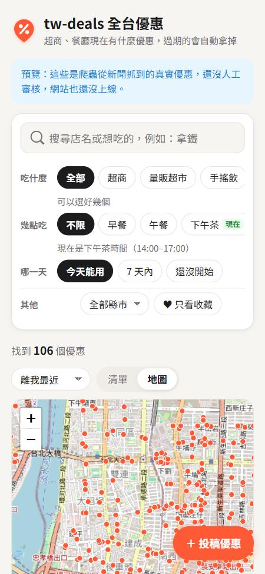

把二十件同時在跑的專案，變成一份交付得出來的計畫。I turn twenty moving projects into one delivered plan.
清華大學經濟系，修習資料科學。從公家標案到跨國共同開發，從議價發包到金流管控——需要算的地方，SQL 我自己寫。NTHU Economics, data science focus. Public tenders to cross-border product work, sourcing to cash-flow control — and when the numbers matter, I write the SQL myself.
精選案例Selected cases
六件寫完整的：遇到什麼問題、當初怎麼拆、最後怎麼解、結果是什麼。 Six written in full: the problem, how I broke it down, what I did, what came out.
採購與議價 · 集星資通Sourcing · JustXtar
機電標案議價整併，省下 15%15% off a NT$40M MEP package
600 萬議價後省下的金額saved after renegotiation
較議價前基準降低 600 萬元。NT$6M below the pre-negotiation baseline.
看這個案例 →Read the case →金流與管控 · 集星資通Cash & controls · JustXtar
公司第一套跨專案金流與排程管控The company's first portfolio-wide control layer
提前一週內部期限對契約里程碑internal deadlines vs. contract milestones
內部期限固定提前契約里程碑一週。Internal deadlines held one week ahead of contractual milestones.
看這個案例 →Read the case →公部門送審 · 集星資通Public sector · JustXtar
卡四個月的市府送審，一個月核准A stalled government submission cleared in one month
4 個月 → 1 個月卡關到核准stalled to approved
另撰寫標案建議書，取得台電與桃園市政府標案。Also authored the RFP responses that won Taipower and Taoyuan City Government awards.
看這個案例 →Read the case →
自有產品 · 小數據所Own product · Small Data Lab
壽星日：台灣生日優惠整理站Birthday Deals
581筆優惠在線上營運offers live
線上營運中，已累積 11,205 次收藏、4,784 次使用回報。Live, with 11,205 saves and 4,784 usage reports.
看這個案例 →Read the case →
資料分析 · 小數據所Data · Small Data Lab
21,209 家店的座標，自動長出商圈Clustering 21,209 stores into districts
79.7%自動分群對上人工圈的商圈match against hand-drawn districts
對上人工圈的商圈 79.7%，並補出台中、台南等手工沒做到的縣市。79.7% match against 148 hand-drawn districts, and filled in the counties the manual list never reached.
看這個案例 →Read the case →策略與募資 · AirQuantStrategy · AirQuant
從 0 建到 10+ 投資人 pipelineBuilt a 10+ investor pipeline from zero
0 → 10+投資人 pipelineinvestor pipeline
成為所有募資動作的單一事實來源。A single source of truth for all fundraising.
看這個案例 →Read the case →其他做過的事Everything else
12 件，按能力篩。 12 more, filtered by capability.
兩件 4,000 萬元案從開案跟到兩年交付結束。Two NT$40M programs held from kickoff through a two-year delivery cycle.
台灣智慧公廁 POI 圖層串接其全球車用導航產品，目前測試版。A Taiwan smart-restroom POI layer feeding their global automotive navigation product, now in beta.
不需要為不同層級的投資人各做一個版本。Eliminated the need for three separate versions.
10+ 潛在投資人依資料排優先順序，不靠印象。Data-driven prioritization across 10+ prospects.
成為董事會選址與成本結構決策的主要依據。Became the board's primary input for the location and cost-structure decision.
每案 5 份以上的非結構化來源，轉成可以決策的指標。5+ unstructured sources per project turned into decision-ready metrics.
推動產品重新定位與 LP 溝通策略重組。Drove product repositioning and restructured LP outreach.
如期完成，參與者滿意度 4.8/5。Delivered on time at 4.8/5 satisfaction.
拿下 5 家以上品牌合作。5+ brand partnerships secured.
兩支都已在 Google Play 上架。Both shipped on Google Play.
Bandary · Google Play · RelateStats · Google Play · RelateStats 隱私權政策 · Bandary 原始碼
六成投稿可以自動填，其中 92.4% 正確。64% of submissions auto-filled, 92.4% of them correct.
完整分析 · Model card · 訓練程式
手上看似有 528 萬，還原預收與保留款後實質是 −51 萬。A NT$5.28M cash balance that, adjusted for deposit and retention, is actually −NT$509K.
待過的地方Where
- 2025.11 —集星資通JustXtar業務專案經理 · 資訊系統整合Business Project Manager · Systems Integration客戶包含台電、桃園市政府、台泥、伊甸基金會Clients incl. Taipower, Taoyuan City Government, Taiwan Cement, Eden Foundation
- 2025.12 — 2026.03AirQuantAirQuant共同創辦人 · 策略暨成長負責人Co-Founder · Head of Strategy & Growth量化交易新創Quant trading startup
- 2025.01 — 2025.10燦通國際資產管理CTDAM數據分析實習生 · 創投Data Analytics Intern · Venture CapitalWeb3 與數位資產投資Web3 & digital assets
- 2024 — 2025梅竹工作會Meichu Games Committee活動策畫總召 · 行銷長Campaign Director · Head of Marketing清大千人跨校活動1,000-person inter-university event, NTHU
- 2026.05 —小數據所Small Data Lab獨立開發 · 自有產品Solo build · own products三個上架產品與背後的分析Three shipped products and the analysis behind them
怎麼想事情How I think
先定義再深入Define before you dive
專案最昂貴的錯誤，是精準地做出了錯的東西。我在任何人動工前，先把範圍白紙黑字定下來。The most expensive project mistake is building precisely the wrong thing. I lock scope in writing before anyone starts work.
拆解成可測試的層次Break into testable layers
「為什麼會延？」→ 範圍 vs. 廠商 vs. 送審 vs. 金流。拆開來看才找得到真正的卡點，而不是追著症狀跑。"Why is this late?" → scope vs. vendor vs. approval vs. cash. Separating the layers finds the real blocker instead of chasing symptoms.
每份回報都要一個決定Every report asks for a call
不會改變任何決策的進度回報只是雜訊。我發出的每份報告都以「我需要你做什麼決定、什麼時候之前」作結。A status update that changes no decision is noise. Every report I send ends with: here is the call I need from you, and by when.
自己做的產品與分析Own products & analysis
三個上架的產品，加五份把它們算清楚的分析。數字是即時的。 Three shipped products and five analyses. The numbers are live.
聯絡Contact
- afortunado.fu@gmail.com
- 電話 / LINEPhone
- 0983-517-504
- 地點Location
- 台北 · 新竹 · 台中 · 遠端Taipei · Hsinchu · Taichung · Remote